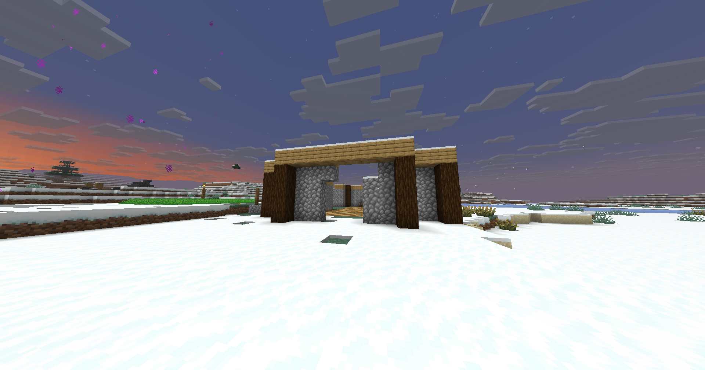

Editie #10 De grote verlieseditie
Alles kwijt.
Inkriin blijft.
Haar full netherite set, haar Empire, haar Blood Wand en alle bouwmaterialen: Kyra is alles kwijt. Alleen Inkriin en het huisje zijn nog over.
Lees editie #10